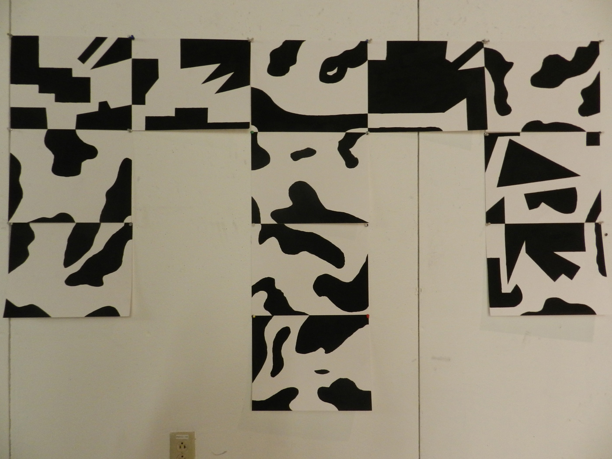

Grid Patterns
Acrylic on paper
For this project, I first had to draw an grid of interlacing patterns where if one square ended on a black edge, the edge across from it had to be white and vice versa. From the initial twenty square we sketched out, I selected a minimum of 10 squares to be blown up to 11x14 in. black and white paintings for the final version of project.

- Aidan Bauer